跟着小林，把改好的 University 再走一遍
这一版把你对 V6 的意见都放了进去：开屏动画、会说话的涟、岛上的宝箱、徽章，还有会发光的知识卡。
2026-09-27 Owner 批准施工：「我觉得就可以按这个开始实施了」。第二轮的 N–R 没有单独点选，按推荐 N1 O1 P1 Q1 R1 施工，想改随时说。页面里的岛景（树、草、石头）是示意，施工时小怪、宝箱和星星放进真正的岛，树用岛上原有的圆冠树。
修订一（2026-10-01）：进了一关以后，学习者看到什么。一关的样子、八种动作、上方的 3D 小庭院、练习材料怎么摆、学完以后，按 Owner 9 月 28–30 日在互动组件设计稿里的拍板记入。
这份报告怎么读
还是请出虚构的新用户「小林」。你跟着小林，从打开 University 开始，一站一站往下走。每一站照旧五步：
- 现在是什么样：真实截图，红色数字告诉你看哪儿。
- 小林会怎么想：一个新手的第一反应。
- 问题出在哪：一句话说清。
- 建议改成这样：线框图或真实的 3D 样子，绿色数字对应改动。
- 为什么：打个比方，再讲背后的道理。
和 V6 相比，有两处读法不一样：
- 紫色框现在只放你在 V6 意见里说过的原话，让你看到每条意见落在了哪里。以前那种「这里守住了你以前的决定」的框，全部拿掉了。
- 宝箱、徽章和知识卡，是真的做出来的 3D 模型和效果，不是示意图。有几处你可以亲手点一点。
小林（虚构）。35 岁，在公司做行政。听同事说 AI 能帮忙写周报，自己没怎么用过，怕问错、怕被笑。每天通勤路上有 10 分钟，主要用手机，偶尔在公司电脑上打开。
如果你只有一分钟
- 最大的变化在「学完这一关」：不再弹一张清单。镜头推到你的小人身边，一起打开一个宝箱。宝箱就摆在岛上每一关的旁边，走在路上就看得见。
- 其次是三处「让人第二天回来」：打开时有开屏动画，顺便讲清卖点；回来时涟直接说「继续第 2 关」；连续几天、今天学了几关，放在头像旁边。
- 第二轮又加了一层游戏感：没开的关站着小怪，开完箱扔一颗知识之星把它赶走；箱子越稀有，庆祝越久；快忘的卡会变成回到岛上的小精灵。
这一轮有 5 件新事需要你拍板。从头读完大约 25 分钟。
先对一遍：你的意见，我是这样听懂的
你是口述的，怕有错字或者没说清。下面每一条，是我理解的意思和打算落在哪一站。有听错的，告诉我是第几条就行。
- 1加一个开屏动画，网页、电脑、手机都有。用文字动画讲卖点，下面一条进度条跟着真实加载走。加载完点一下进入，网页才能放音乐。转场时只有卡住超过 2 秒才出现。第 1 站
- 2第一次打开，用涟的面板来承载，样式统一。内容照 V6：选方向、先测一下、帮你选。可以分页。第 2 站
- 3「这里守住了你以前的决定」那种紫框，看着莫名其妙，去掉。全篇
- 4上第一关的小改动，可以做。第 3 站末尾
- 5岛上每一关的垫石旁边，放一个 3D 宝箱，左右随机一点，显得自然。宝箱照参考视频做几款，做得更好。每种宝箱代表什么由我来定，要和成长系统绑在一起。第 3 站
- 6学完一关，不弹面板。镜头推到小人旁边，放低一点，主角是小人和宝箱。宝箱打开，喷出东西，有声音，报出连续第几天、拿了多少经验。第 4 站
- 7之后再弹「记住它」和「存下来」。记住它只要一句话。存下来分两种人：没注册的，请他留邮箱；注册了没付费的，告诉他已经存好、多端同步，再介绍会员。第 5 站
- 8第二天回来，「继续第 N 关」放进涟里。第 6 站
- 9连续几天、今天学了几关、会员，放进左边有 3D 头像的那块面板，做得好看。第 6 站
- 109 月 18 日那条地图规则，只保留「说明栏只介绍选中的岛」，其余以简单高效为准。你说的是「左边的说明栏」。现在介绍岛的那一栏在右边，我理解你指的就是它，位置不动。第 6 站
- 11找路、复习、进步、付钱、账号这几站，照 V6 的改法，能更简洁就更简洁。第 7–12 站
- 12图鉴做成会随手指倾斜、会反光的卡片，好看、有收集感，点进去能复习。第 9 站
- 13统一叫「第 N 关」；电脑话删掉；写给作者看的话，要彻底清掉。小毛病
- 14「为什么不直接问 ChatGPT」，要写进开屏和会员页。第 1、11 站
- 15菜单可以减，但每个旧入口都要有清楚的去处。调 3D 的那些面板，现在不能删，放到合适的地方。第 7 站
- 16进度从 5 套减到 2 个，怎么减由我来定。第 10 站
- 17还没有课的星球先留着，以后课多了再丰富。小毛病
- 18徽章也照参考视频做，多设计一些，放在合适的地方。第 10 站
- 19V6 的拍板：A1 B2 C1 D1 E1 F2 G2。其中 B2 是「4 个门」，和「12 个减到 5 个」那句不一样。我按你点选的 B2 画，「成长」并进「我」。已拍板
第二轮意见，我是这样听懂的：
我们要走的路线
一共 12 站，按小林真实使用的先后顺序排。橙色的是改得最多的四站，时间紧就先看它们。
- 0先认识一下现在的产品用一分钟认一认页面上的几个地方
- 1打开 App：开屏动画第一眼看到的是「正在加载」
- 2第一次见面：涟来打招呼一个弹窗和一滴水，两个声音
- 3岛上的一关，长什么样路上看不见前面有什么好东西（第二版：小怪占路）
- 4学完这一关：开宝箱，赶小怪最开心的一刻，被做成了一张清单
- 5收尾：一句话，一张卡同一张卡，对三种人说同样的话
- 6第二天回来找不到「接着学」，连续几天藏得很深
- 7在产品里找路12 个入口，手机上的图标没有字
- 8复习和练习学 AI 的人，被考了网页设计
- 9翻翻图鉴一本大词典，没有收集的乐趣
- 10看看自己的进步五套进度，全是 0
- 11考虑付钱会员卖的是「同步」，而且没法退订
- 12账号、设置和退订隐私政策、帮助页都还没有
走完 12 站，后面先是一张「奖励怎么连起来」的总图，和新加的「让人停不下来」。再往后是一路上的小毛病、站高一点看、改完以后的样子，和 5 件要拍板的事。
先认识一下现在的产品
出发之前，先认一认页面上的几个地方。这张是今天刚截的，涟已经住进了地图。
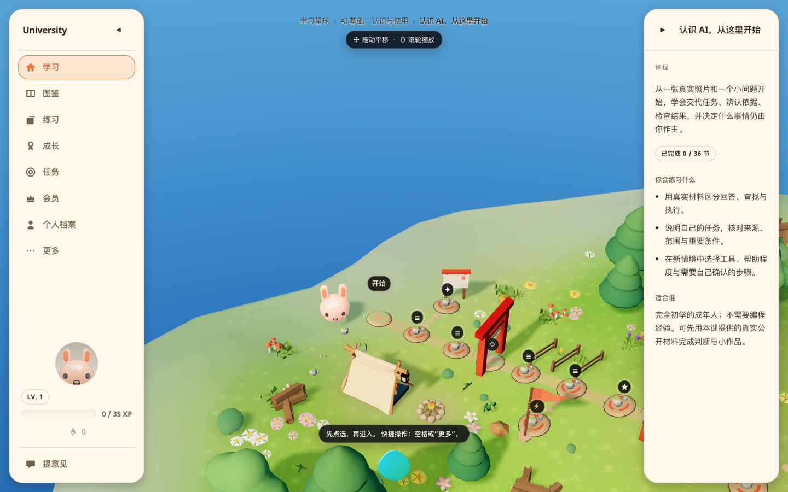
1 2 3 4 5 6- 1左边是菜单。8 个按钮，最后一个「更多」里还藏着 4 个。
- 2菜单下面是头像面板。3D 的小兔子头像、等级、经验和一个小火苗（连续天数），字很小。
- 3中间是岛。一块块垫石就是一关一关，路边有鸟居、旗子和告示牌。
- 4右边是说明栏。介绍你选中的这座岛。
- 5底部有一行操作提示：「先点选，再进入。快捷操作：空格或更多」。
- 6青色的水滴是「涟」。点它，会弹出「我该从哪开始？」这样的常见问题。
打个比方
现在的 University 像一座刚建好的游乐园：设施都齐了，风景也漂亮。V6 补的是路牌和前台。V7 再补三样游乐园最会用的东西：一个让人期待的大门，每个项目出口的小礼物，和一本会盖章的通关护照。
V6 的主线是一句话：零件都齐了，缺一条把它们串起来的线。V7 在这条线上挂了三样东西：开场、奖励、回来的理由。下面我们跟着小林出发。
这一版挂在线上的三样东西
小林在手机上点开同事发来的链接。第一眼，看到的是什么？
打开 App：开屏动画
小林点开链接。3D 的岛要先下载、再画出来，这需要几秒钟。这几秒，现在是这样过的。
这张卡一闪而过，我没截到，是照着代码画的。
第一次打开，会有这样一张小卡片，写着「地图马上铺开」。以后再打开，卡片上只换成一句课程介绍。卡片一消失，3D 的岛、树和小人就一块一块冒出来。整个过程没有进度，也没有声音。
岛是一块一块冒出来的……是不是网不好？这到底是个什么东西？
第一眼看到的是「正在加载」，不是「这是什么、为什么值得学」。而且网页没法出声：浏览器规定，用户点过页面之前，网页不能放声音。
加一个开屏。你可以在下面这部手机上看它怎么动：
在这里一起用
- 1一句一句亮起来的卖点。每句都有一个亮起来的关键词。一次打开只放两三句，下次换别的。
- 2进度条跟着真实加载走。岛、树、小人都下载好、画好，才走到 100%。进门时岛已经完整在那儿，不再一块块冒出来。
- 3加载完，才出现「点一下，开始」。这一下让网页可以放音乐，也让「进门」变成一个小仪式。
- 4转场用同一个样子，但只在卡住时出现。比如从星球进岛、从课文回到岛上，超过 2 秒还没画好，才盖上这一屏，只放一句话和进度条，不用点。
开屏上轮流出现的卖点，我按你说的列了 7 句。有一句要等功能真的接通了才能说：
- 当下最强的几家 AI，在这里一起用，不被一家绑住接通后才能说
- 不用花时间调教 AI，一切都准备好了现在就能说
- 每一关，都连着一个真实的例子现在就能说
- 按记忆曲线复习，快忘的时候叫你回来现在就能说
- 好玩，才学得下去现在就能说
- 省下摸索的时间，只管开心地学现在就能说
- 直接问 AI，你得到一个答案；在这里，你学会怎么问、怎么判断，还能记住现在就能说
最后一句就是 V6「站高一点看」里的第三样：回答「我为什么不直接问 ChatGPT」。它第一次打开时一定出现，会员页上还会再出现一次。
转场的规则，画成一条时间线：
打个比方
游乐园排队的地方，墙上挂满了项目的海报。排队不觉得无聊，还没进门就已经开始期待。
背后的道理
有东西可看的等待，感觉会短很多。进度条必须是真的：卡在 99% 的假进度条，比没有进度条更让人着急。卖点也必须是真的：说了做不到，用户下次就不信你了。
你在 V6 意见里说
「它在第一次打开的时候必须出现。然后在转场的时候，如果没有卡顿就不用出现。」「点击之后……音乐就能播放起来。」
我多想了一步
网页每次打开都得点一下，才能放音乐，这是浏览器的规定。手机和电脑的 App 没有这条规定，可以加载完直接进。要不要三端一样都点，见拍板 I。
小字：「最强的几家 AI」那句，为什么要等
我们的 AI 工具包可以通过一个统一的入口接很多家模型，所以「不被一家绑住」这件事，技术上是成立的。但现在卖给用户的交付版里，AI 批改还没接通；作者版用的是这台电脑自己的 AI。等交付版接通 AI 批改，这句话才能上开屏。
现在加载卡片的代码里写着一条原则：「不强迫任何人多看两秒」。开屏照样守着它：不故意拖时间，加载一完成就能点。唯一多出来的，是那一下「点一下，开始」。
手机 App 和电脑 App 启动时，系统会先显示一个静止的图标，然后才是这个开屏。开屏做成界面工具包 SwimmerUIKit 里的一个组件，三端共用一份。
小林点了「点一下，开始」。音乐轻轻响起，岛已经完整地在那儿了。这时，屏幕下方那滴青色的水，开口说话了。
Owner 修订 · 2026-10-03：只有一条路时
旧课退役后，只剩一条真实可学的路。欢迎直接带学习者走这条路，不再展示只有一个选项的选择，也不再问两道选路问题。涟沿用第三步的引导，带到这门课第一块垫石旁；仍由学习者进入第一关，不代替他答题或写学习进度。没有可学路线时等待目录，不跳到虚构课程。以后有了第二条路，恢复下方已批准的选路流程。两种模式使用同一规则，依据真实目录的路线数量判断。
第一次见面：涟来打招呼
这是小林对 University 的第一次对话。现在，和小林打招呼的有两个「人」。
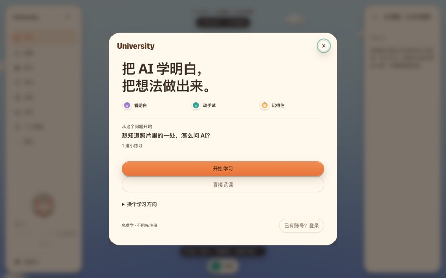
1 2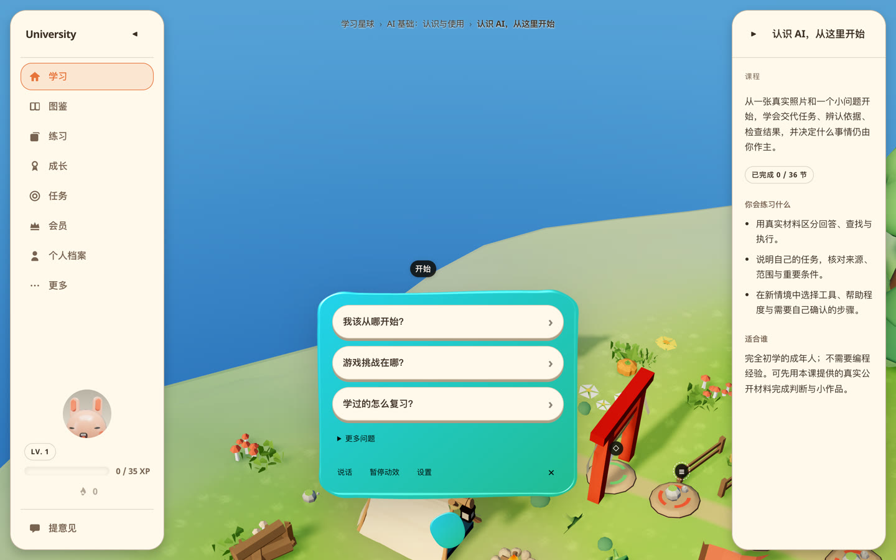
3- 1欢迎是一个单独的白色弹窗，和地图上的涟是两种样子。
- 2「开始学习」「直接选课」「换个学习方向」挤在一屏。
- 3涟的面板：青色的水滴弹出三个常见问题，比如「我该从哪开始？」。
这个弹窗关了以后，底下那滴青色的水又是什么？两个都在教我怎么用吗？我该听谁的？
「带新人上路」这一件事，有两个声音：一个弹窗，一个涟。新人得认识两个帮手。
第 1 关：想知道照片里的一处，怎么问 AI？从这里开始
① 打招呼，选一条路
② 拿不定主意时才出现
③ 涟飞到第一块垫石旁
- 1「带你上路」的话，全都由涟来说。样子统一，原来的白色弹窗拿掉。当前只有一条路时直接进入；第二条路出现后，恢复 V6 的路线卡，每张卡就是一条路。
- 2一页只问一件事。拿不定主意，再点「帮你选」，两道小题。用过 AI 的人，可以先测一下，答得好就跳过前面几关。
- 3选好以后，涟飞到第一块垫石旁边，指给你看第 1 关和旁边的宝箱。这是全程唯一的一次「带你走」，只有一步，关掉就走。
「已有账号？登录」和「直接选课」还在，变成第一页最下面的小字。回访的人不会再看到这一套。
打个比方
进一家店，门口迎你的店员，就是店里带你看货的那一位。你只要记住一张脸，有问题就找 TA。
背后的道理
一个角色从头陪到尾，新人更容易信它，也知道有问题该找谁。一页一个问题，比一页三个问题更快：人每次只需要做一个决定。分页不是负担，挤在一起才是。
你在 V6 意见里说
「如果一些选择、智能的面板都在（涟）那里面的话，就更统一了。」「分页是 OK 的呀，分页反而降低了认知负担。」
小字：涟的工具包能不能做到
能。涟的工具包已经支持两件事：在面板里放产品自己的卡片；带着人一步一步去看地图上真实的地方（最多 6 步，第 ③ 步只用 1 步）。不需要改工具包。
「帮你选」的两道小题不调用 AI，按固定规则推荐，不花钱。
手机屏幕窄，两张路线卡会上下排。上线前要在真手机上看一遍，确认面板不会盖住第一块垫石。
小林选了「认识 AI」。涟飞到岛上第一块垫石旁边：「这是你的第 1 关。」小林这才第一次仔细看这座岛。
岛上的一关，长什么样
涟把小林带到了第一块垫石旁。先看看，现在岛上的一关是由什么组成的。
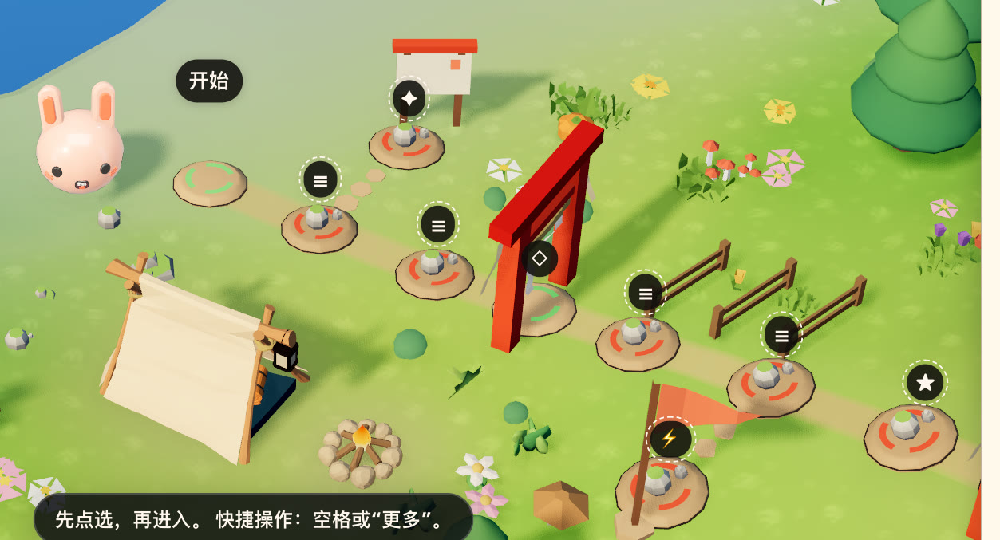
1 2 3 4 5- 1垫石，绿圈：现在能去的一关。小兔子就站在旁边。
- 2垫石，红圈，上面压着一块石头：还没开的关。
- 3每一关头顶，还有一个小圆标。
- 4红色鸟居：一段路的终点。
- 5橙色旗子：岛上的游戏挑战。
一块块石头……学完一关能得到什么？要走到哪儿才算完？
路上看不见「前面有什么好东西」。学下去的理由，只剩「还有下一关」。
一关由三样东西组成：垫石、没开时站在上面的小怪、旁边的宝箱。
放回岛上，是这个样子：
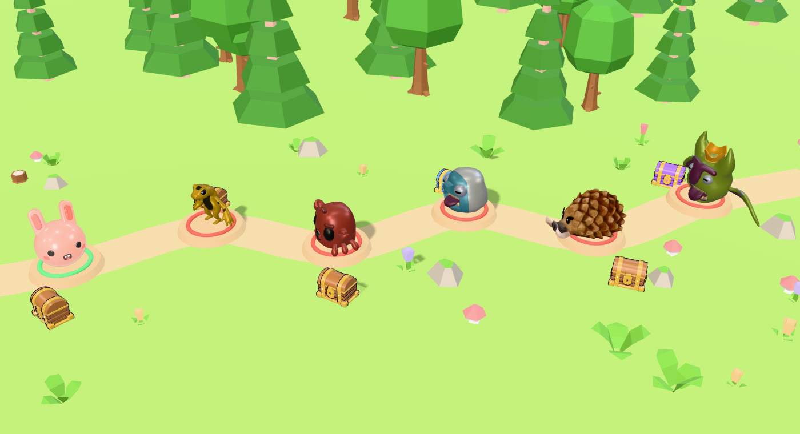
1 2 3 4- 1现在这一关：绿圈，小兔子站在上面，旁边的木箱在发光。
- 2后面每一关，都站着一只小怪。原来压在垫石上的石头，换成了小怪。
- 3宝箱在路边的草地上，左边右边随机一点。一段路的最后一关是蓝箱。
- 4一段路的尽头，是戴王冠的大怪，旁边是紫箱。
小怪是谁？每一只，都是新手心里的一个「怕」。学完下一关，就把它赶走：
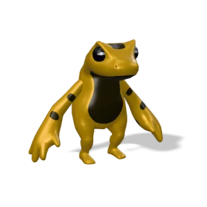
怕问错蛙「问错了会不会很丢人？」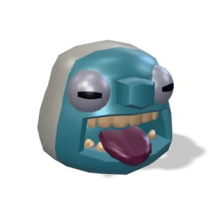
乱编怪「AI 是不是在胡说？」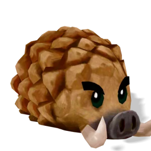
太难球「这也太难了吧。」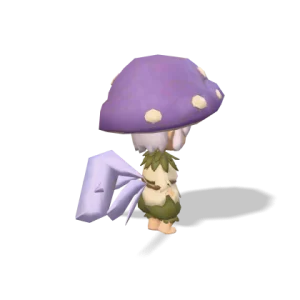
没基础菇「我一点基础都没有。」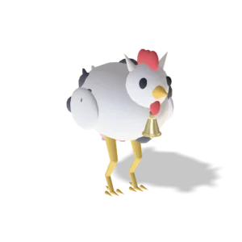
没空鸡「我哪有时间学。」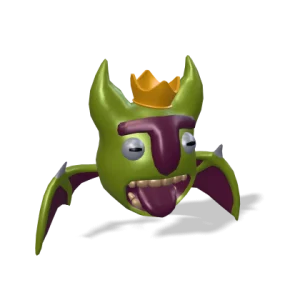
学不会大王「我肯定学不会。」站在一段路的尽头怪物来自你给的第二个素材库（world-of-claudecraft）。它们本来就有骨骼和动作：站着、摇头、蹲下抱头、逃跑、跳。我已经把这个素材库同步到了最新版，里面现在有 98 只怪。挑的是颜色亮、造型圆、不吓人的几只。Kenney 那个素材库里的角色也有动作，但是人形小兵，不像怪，就没用。
一共四种箱子。它们放在哪、多装了什么：
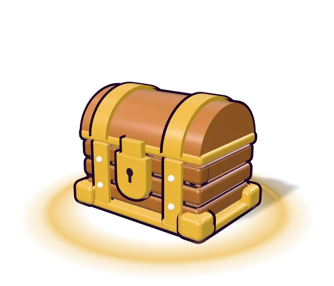
木箱 · 普通每一关旁边这一关的经验、复习卡、知识卡、连续天数，还有一颗知识之星（下一站用来赶小怪）。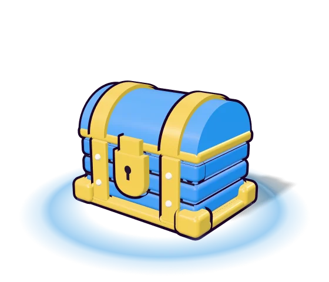
蓝箱 · 稀有一段路的最后一关另加一张「这一段学会了什么」的小结卡，和一个卡包。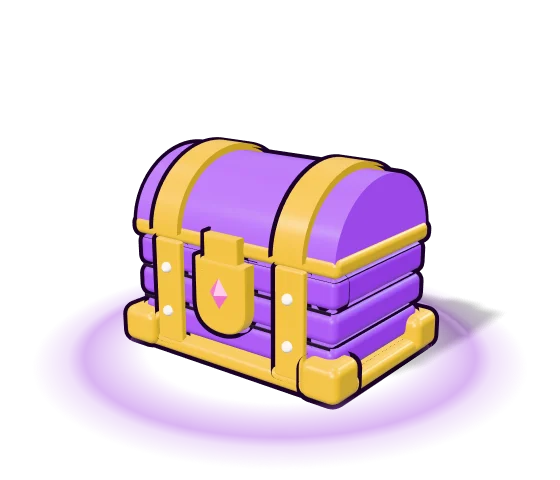
紫箱 · 史诗大怪和游戏挑战旁边另加一件头像装扮，和一个卡包。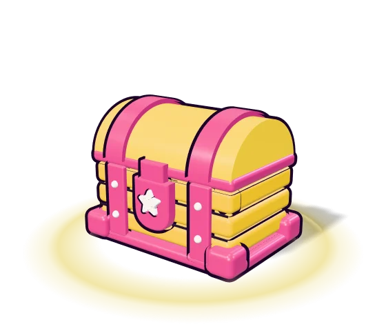
金箱 · 传说整座岛的最后一关另加这门课的徽章、能分享的结业卡、三个卡包。还有一个小惊喜：一关里每道题都是第一次就答对，箱子会先「升级」一格再打开，木箱变蓝箱，蓝箱变紫箱。只会往上升，不会往下降。
箱子里的学习奖励，全是产品里本来就有的：经验值、复习卡、知识卡、连续天数、徽章。新加的只有两样好玩的：赶小怪用的知识之星，和只装装扮的卡包（后面「让人停不下来」那一部分细讲）。
打个比方
超市的集点卡上印着「集满 10 个点换一个杯子」，你会忍不住多买一次。游戏的地图也一样：远远就看见下一关旁边有个箱子，脚就停不下来。
背后的道理
看得见的奖励，让目标变得具体。离奖励越近，人越有劲，就像跑步的最后一圈会不自觉加速。偶尔的惊喜比固定的奖励更让人期待，但惊喜只能加，不能扣。
你在意见里说
「在每一个垫石的旁边靠近它，可以左边可以右边，让他有一点点放置的位置的波动。」「有没有可能在垫石上都统一不用石头，而是用各种小怪物呢？站在垫石上。」
普通箱为什么用木头色（你已选 H1）
参考视频里的普通箱是绿色的。放到岛上以后，我发现两个问题：绿色在草地上不够显眼；地图上的绿圈已经表示「能去」，绿箱子会让绿色多一个意思。所以我把普通箱做成了木头色，蓝、紫、金三种照参考。两种颜色的对比图在拍板 H 里。
小字：程序化地图要怎么改
宝箱是岛上的一种新东西，和垫石、鸟居、旗子一样，用同一套「在路边找空地」的规则摆放。找不到空地的那一关，箱子就挂在垫石边上缩小一点，不挤掉任何已有的东西。
同一种箱子一次画完。36 关的岛上有 36 个箱子，一共只多出几次绘制，手机也扛得住。箱子开没开、发不发光，都由「这一关学完没有、是不是现在这一关」直接算出来，不另外存一份。
小怪比箱子贵：它们有骨骼、会动。做法是只让离你最近的三只动起来，远处的定格站着，同一种怪一次画完。每只怪的模型只有几千个面、几十到几百 KB，同一种怪整座岛只下载一次。
岛上每种东西都有一张「用什么画法、最多多少面」的锁定表。宝箱要在表里加一行，再按表做。箱子的模型现在是我用代码做的，下一步要换进地图的颜色管线，让它和岛上的光一致。
进课以后：课文这一站基本不动。只改 V6 说过的那一处：课文上方的路径，第一格现在显示「…」，改成课程名。
小林点了「从这里开始」。三分钟后，TA 答完了最后一道题。接下来，是全程最关键的一刻。
学完这一关：镜头推近，开宝箱
小林答完了题，点了「我读完了」。这是 TA 在 University 里的第一次成功。
这一页我没能截到图，是照着代码画的。
学完以后，小林看到的是一长页。进度条、卡片、连击、明天的复习、岛长大、新概念、卡片内容、复述、下一关、回地图，十样东西排成一列。
「读完了。」……然后呢？这么多东西，哪个跟我有关？
最有成就感的一刻，被做成了一张清单。
下面四张，是我用产品里真正的小兔子头像和做好的宝箱，在 3D 里摆出来的：
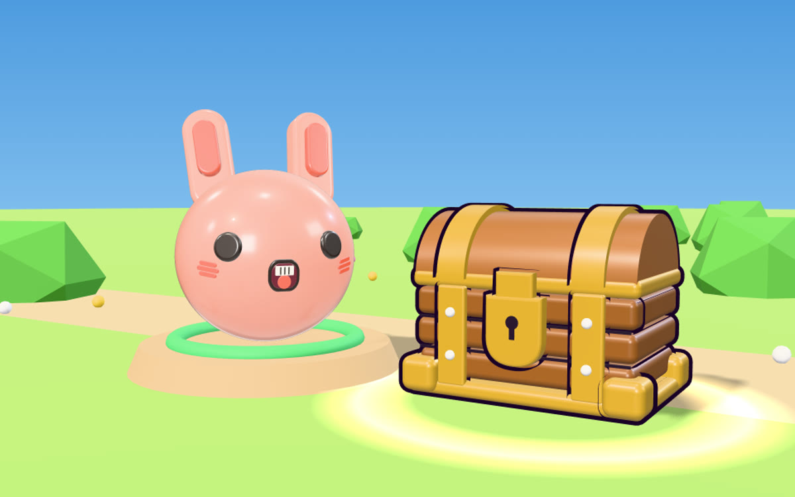
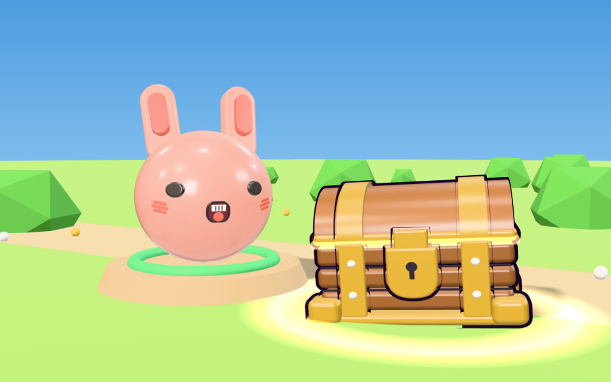
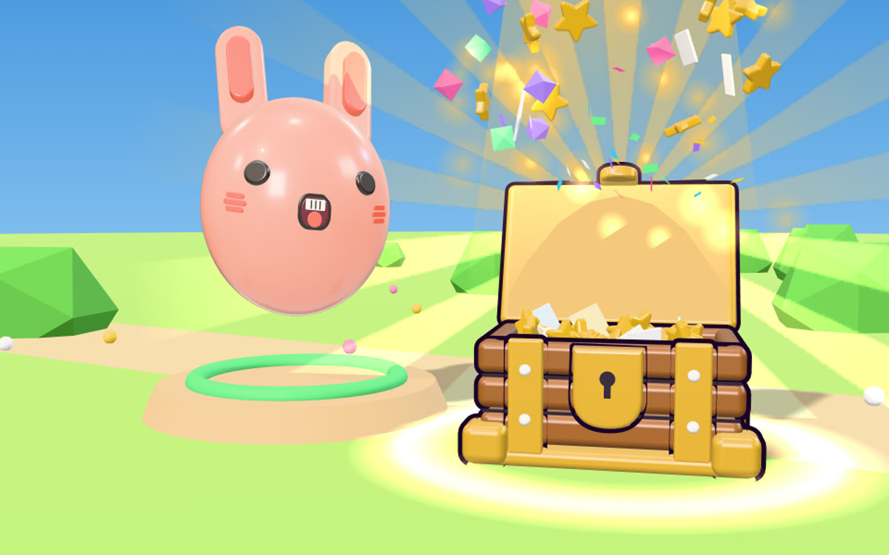
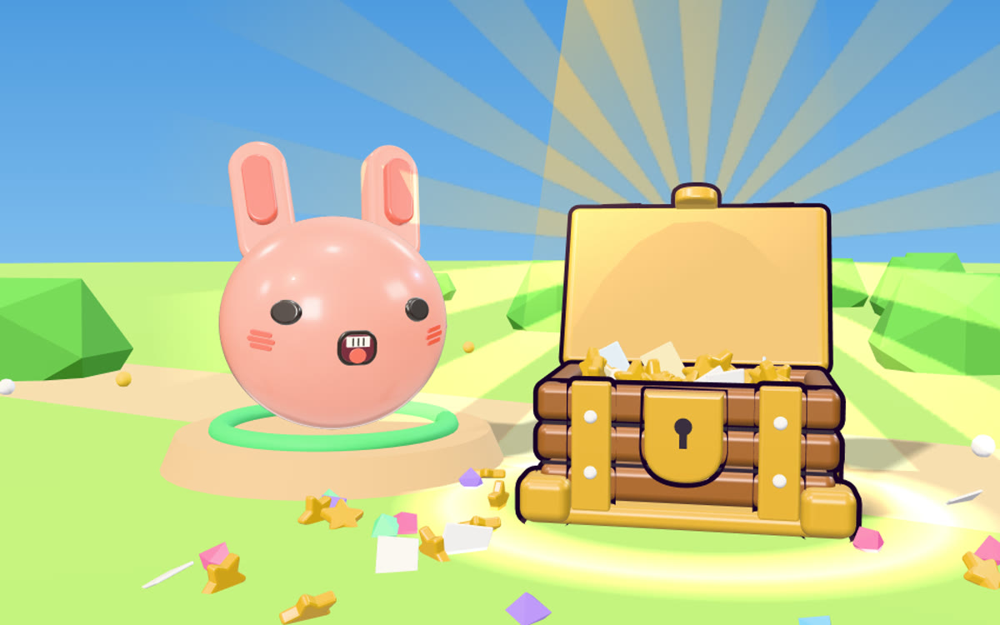
- 1学完不弹页面，回到岛上。主角是小林的小人和旁边的箱子。
- 2要点一下，箱子才开。这一下是小林自己的动作，比自动播放更有「我拿到了」的感觉。
- 3奖励按顺序弹，一次一个。数字都是真的：第一关读完加答对一道题，正好 40 点经验，够升第一级。产品现在就是这么算的。
开完箱，还有最后一件事：箱子里那颗知识之星，用来把下一关的小怪赶走。
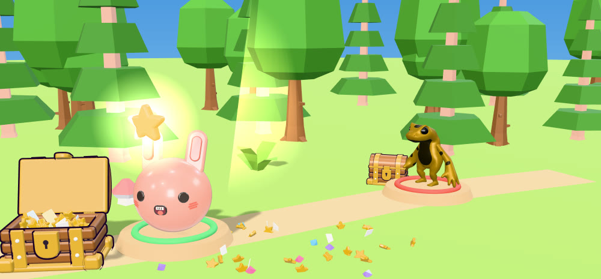
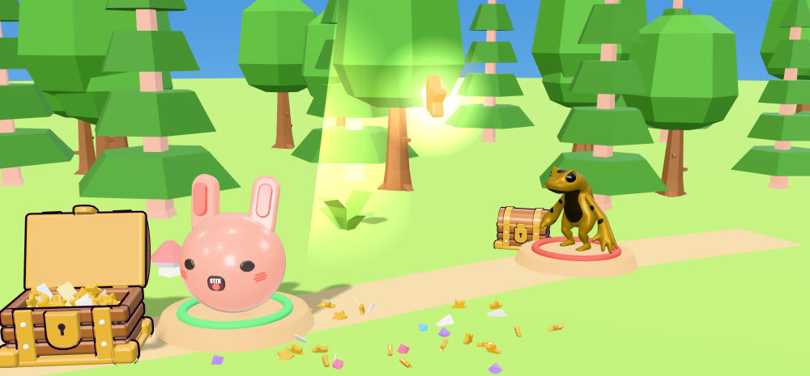
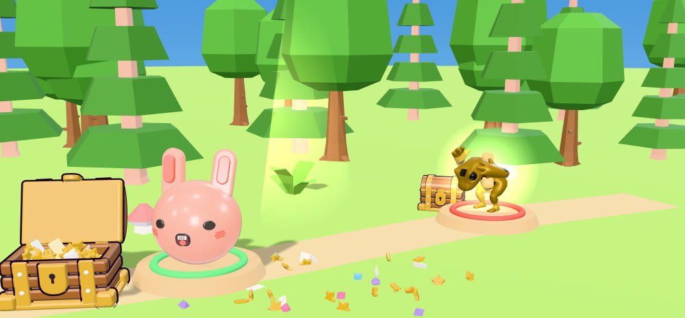
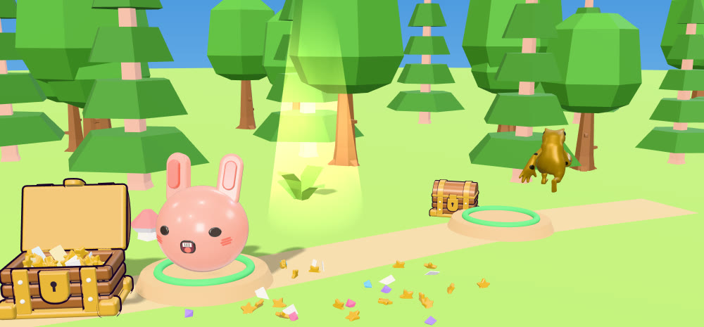
小怪的反应每次随机一种，看久了也不腻：摇头求饶再跑；星星还没到就吓跑了；被打中后跳起来原地转一圈再跑。段尽头的大怪要连扔三颗（一段路里攒下的星星），才会跑。
四种箱子的庆祝不一样。越稀有，喷得越多、越久、花样越多：
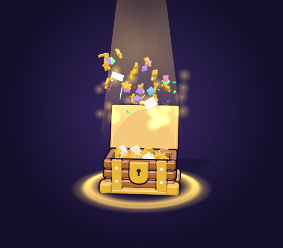
木箱一波。星星、卡片、彩纸，一道光柱。大约 2.5 秒。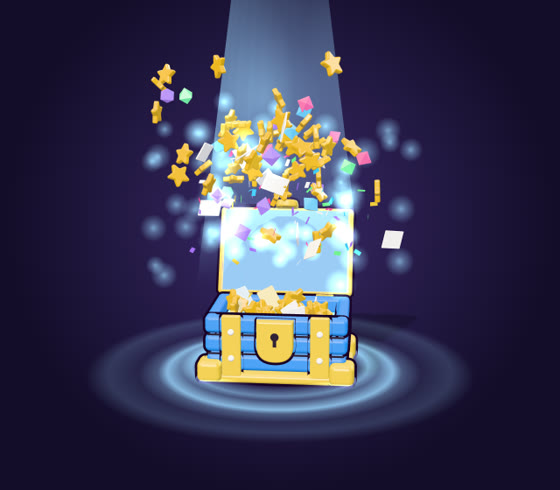
蓝箱两波，多了光点和地上的冲击波圈。大约 3.5 秒。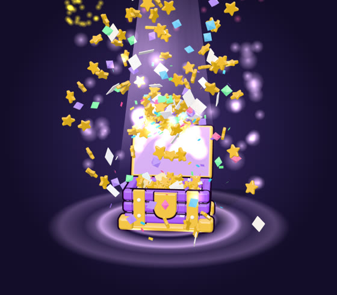
紫箱三波，加上空中的小烟花，画面轻轻震一下。大约 4.5 秒。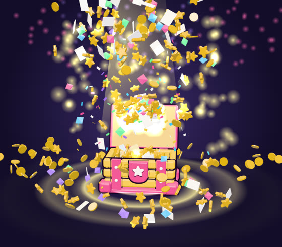
金箱四波，满天烟花，金币从天上落下来，震得最明显。大约 6 秒。每次都完整演（你选的 J2），只是时长跟着箱子走。开箱前还有一小段「蓄力」：箱子越抖越厉害，盖子缝里透出光，然后「砰」地打开。这一招来自你给的第二份参考提示词。任何时候点一下，都会快进到奖励。
你可以亲手开一个。选一种箱子，点「开箱」：
这是一个真的 3D 小样：模型、开盖、喷出来的东西都是代码做的，和以后放进岛上的是同一套。慢一点的电脑上，第一次要等几秒。
系统里打开了「减少动态」的人
镜头不动，箱子直接是开着的，奖励排成一行，小怪直接不见，垫石变绿。
打个比方
拆礼物。礼物最好的部分，是撕开包装那一下，不是事后拿到的一张清单。
背后的道理
人回忆一段经历，主要记住两个时刻：最开心的那一刻，和结束的那一刻。学完这一关，两个都在这里。奖励要当场给、看得见、听得见；隔一页再列出来，就成了一张账单。
你在意见里说
「宝箱里面可能还有……子弹，获得一颗子弹。紧接着这个角色就会有动画，用这一颗子弹发射出去，把下一关垫石上站着的怪物打中，那怪物就逃跑了。」「木箱、蓝箱、紫箱、金箱开的时候，喷发的持续时间和内容得有区别……金箱喷的更长，可能好几波！」
小字：这些东西现在有没有
小人已经会「欢呼」「跳」，也有「开心」的表情；声音里已经有「拿到奖励」「走完一门课」「连续天数」这几种。宝箱、粒子、镜头这一段要新做。
能读的字（经验、卡片名、徽章名）都是网页文字，叠在 3D 画面上，屏幕阅读器能读，手机上字也清楚。
喷出来的东西最多 80 个，1.5 秒后落地停住。慢的手机上自动减半。
「点亮 1 张知识卡」要靠课文里标出这一关讲到的概念。「认识 AI」这门课的课文里，现在一个概念都没标，所以今天学完，其实什么都不会亮。这件事交给写课的流程去补，这份报告不改课文。
奖励收好了。这时，涟冒出来说了一句话。
收尾：一句话，和一张「存下来」的卡
开完箱，还有两件以后最用得上的事：让小林知道卡片会回来，以及把进度存好。
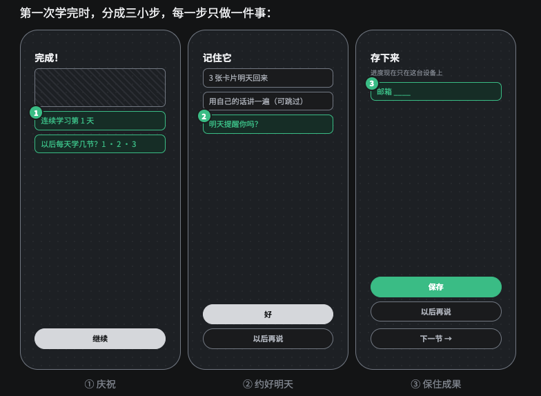
1 2- 1「记住它」是单独一步，卡片、复述、提醒挤在一起。
- 2「存下来」只想到了没留邮箱的人。已经注册的人，这一步说什么，没有画。
刚开完箱子，又要读一屏字、填邮箱？……要是我已经注册过了，为什么还问我？
同一张卡，对三种人说同样的话：没留邮箱的、留了邮箱没付费的、已经是会员的。
- 只在学完第 1 关后出现；跳过了，第 3 天再问一次（你拍板的 D1）。
- 「提醒」和「保存」一个按钮说清楚，不想要提醒，点下面的小字（拍板 K）。
- 会员这张，同一个人一周最多出现一次。
- 其余时候只有前两行和「下一关」。
- 只有一句话，4 秒后自己收起。
收尾卡就在涟的面板里，岛还在背后。
- 1「记住它」只剩一句话。谁都会看到，不用点。「用自己的话讲一遍」变成卡片最下面一行小字，想讲再点。
- 2下面那张卡，按人不同。没留邮箱的，请他留；留了的，告诉他已经存好，再介绍会员；会员，什么都不问。
打个比方
超市收银台：先把东西装进袋子，再问一句「有会员卡吗？」。已经有卡的，收银员就不问了，只说一句「积分已经记上」。
背后的道理
只问对这个人有用的问题；问过的，不反复问。能一句话说清的，就不做成一步。
你在 V6 意见里说
「记住它，我觉得是直接就呈现出来……一句话，就是已经存入复习啦。」「第三个屏幕是面对两种状态：一种是没有注册的用户，第二种是注册了、但没有花钱的用户。」
我多想了一步
你没提「明天要不要提醒」。我把它并进了「保存」那个按钮：提醒是让人第二天回来的第一环（下一站的那个圈），不能丢；但也不值得单独占一步。
第二天早上，小林在地铁上又打开了 University。
第二天回来
第二天早上，小林在地铁上又打开了 University。这一站决定 TA 会不会变成每天都来的人。
- 1岛和第一天一模一样，没有「继续」。要自己找昨天学到哪块石头。
- 2连续几天，是头像下面一个小火苗，旁边一个很小的数字。
- 3底部还是那行电脑话：「快捷操作：空格或更多」。
我昨天学到哪了？今天该点哪块石头？……算了，地铁到站了，明天再说吧。
回来的人，第一眼找不到「接着学」；自己坚持了几天，也看不清楚。
一个习惯能不能养成，靠下面这个圈能不能转起来。V6 画的是三格，这一版加了第四格：看得见的盼头。
现在：圈断了三处
提醒从来不出现；回来找不到「继续」；自己坚持了几天，看不清楚。
改完：四格都转起来
「有 3 张卡快忘了」→ 涟说「继续第 2 关」→ 开箱 → 头像旁的火苗又多一天，下一只箱子在发光。
今天 0/1 关
- 1涟主动冒出来：「继续：第 2 关 · 大约 3 分钟」，按「开始」就进课。镜头一打开就对准这一关，旁边的箱子在发光。
- 2左边头像面板，加上连续几天、今天学了几关、段位和等级，会员也在这里。下面是放大的样子。
- 3删掉底部那行电脑话。地图怎么用，交给涟回答。
头像面板，是你说「非常漂亮」的那一块。我保留它的深色和 3D 头像，把最常看的两个数字做大：
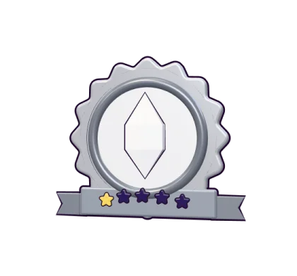
小林 · 石阶- 1火苗和数字挂在头像右下角，连续几天，一眼就看见。
- 2头像外面那一圈，是今天的进度。学完今天的关，圈就合上，变成金色。
- 3一周七个小圆点，学过的那天亮起来。
- 4名字旁边是段位徽章（第 10 站讲），下面是等级和经验。
- 5会员放在最下面一行，不抢眼，但一直找得到。
手机上，左上角的头像按钮也挂一个小火苗和数字，点开就是这块面板。
打个比方
看剧的 App，打开就是「继续播放第 3 集」。没有人愿意每天从剧集列表里，自己找昨天看到哪一集。
背后的道理
养成习惯靠四样东西：有人提醒，开始很容易，做完有奖励，看得见盼头。少了任何一样，圈就转不起来。头像旁的火苗和下一只发光的箱子，就是「盼头」。
你在 V6 意见里说
「继续第二节这种提示……我建议把它放在 NERVE 里面。」「应该加在左侧那个面板里，而且得设计得好看一些。」「只保留……说明栏只介绍选中的岛，这个要保留，其他的不一定……以简单高效来做。」
小字：「继续」放进涟以后，要注意什么
涟要主动冒出来，不能等人去点那滴水，不然回来的人还是看不到。关掉以后，地图上这一关的箱子继续发光；点那块垫石本来就能进课，这是地图的基本玩法，不算重复。
「开始」要能用键盘按到、屏幕阅读器读得到。
镜头一打开就对准你上次停下的那一关。9 月 18 日规则里「不替你预选」那一条，按你这次说的「简单高效」放宽了；右边说明栏照旧只介绍选中的岛。
可选：每周有一天「休息日」，那天不学也不会断掉连续天数。连续天数是用来鼓励人的，不该变成新的焦虑。
小林学完第 2 关，想四处看看。可是这个产品里的门，有点多。
在产品里找路
小林想看看还有什么。这一站讲菜单：「房子」有几个门、门上有没有写字、每样东西住在哪。
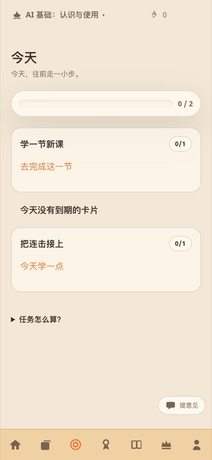
1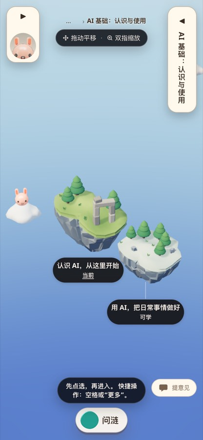
23- 1底部 7 个图标，一个字都没有。
- 2最常用的地图页，干脆没有底部菜单。
- 3要去别的页面，得先点左上角的头像，把侧边栏拉出来。
这个皇冠是什么？这个奖章呢？这个靶子呢？……我挨个点一遍试试吧。
门太多（电脑上 8 个，储藏室里还有 4 个），门上不写字，最常用的地方反而没有门。
手机底部也是这 4 个，每个都写字，岛上也有。连续几天和今天几关，跟着头像走（上一站）。
每个旧入口去了哪，一个都不丢：
- 任务→头像面板上的「今天 0/1 关」；详细的在「我 → 成长」
- 练习→复习 →「再练几道」
- 成长（排行榜）→我 → 成长
- 会员→头像面板最下面一行、「我」、AI 批改用完的那一刻
- 个人档案→我
- 更多 → 目录→学习 →「找课」
- 更多 → 复习→复习
- 更多 → 收藏→图鉴 → 收藏
- 更多 → 设置→我 → 设置
- 头像工坊、互动课件实验室、岛屿外观调试、作者工作台→我 → 设置 →「实验室」（见下面）
调 3D 的那些面板，放进「实验室」
「实验室」是设置最下面的一格，里面放你现在还要用的调试工具：头像工坊、三套互动课件实验室、岛屿外观调试、作者工作台。它们一个不删，只是从用户每天走的路上挪开。以后不用了，整格拿掉就行。谁能看到这一格，见拍板 L。
打个比方
好的商场指示牌只列几个大区：餐饮、服装、超市、停车场，每个都写着字。工具间和配电房也在商场里，只是不写在指示牌上。
背后的道理
让人一眼认出来，比让人记住容易得多。图标只有看惯了才认得，新手需要文字。门越少，每个门就越好认。
你在 V6 意见里说
「别丢功能……有些面板，开了可能调一些 3D 的，这块以后肯定要删掉。但现在你删掉的话，我就调不了了。」
走到一半，先停一下
前面几站，其实都在做同一件事：让小林每一步都知道下一步是什么。开屏告诉 TA 这是什么，涟告诉 TA 从哪开始，宝箱告诉 TA 学完有什么，火苗告诉 TA 自己坚持了几天。
后面 5 站的问题小一些，照 V6 的改法，能更简单的地方我又减了一点。
小林走进了「复习」。
复习和练习
小林学完两关，想练练手。
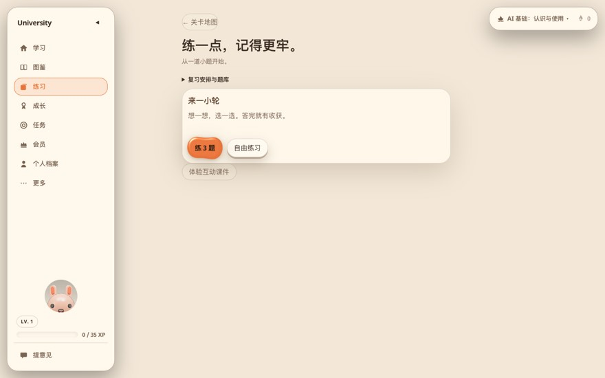
12- 1三个按钮：「练 3 题」「自由练习」「体验互动课件」，区别没写。
- 2「复习安排与题库」折在上面。真正的复习又在另一页，错题本在第三个地方。
小林点了「练 3 题」，第一道题问的是网页登录页怎么排版。
我学的是怎么问 AI，怎么考我网页排版？我是不是点错了？
题目没有跟着人走：题库从全部内容里出题，大半是编程和设计。
- 1到期的卡片放最上面，写清要几分钟。它们就是开箱时拿到的复习卡。
- 2错题并进「再练几道」，先出做错过的。比 V6 的三块又少了一块。练习题只从学过的关里出。
- 3免费批改用完时，会员自然出现。这时提会员，小林知道自己在为什么付钱。
打个比方
驾校刚教完倒车入库，模拟考却考高速超车。学员只会觉得这个驾校不靠谱。
背后的道理
刚学会的东西，趁热在差不多的场景里再用一次，记得最牢。先练做错过的，又比随机出题更省时间。
复习完，小林点开了「图鉴」。
翻翻图鉴：会发光的卡片
菜单第三个门叫「图鉴」。小林好奇，点开看看。
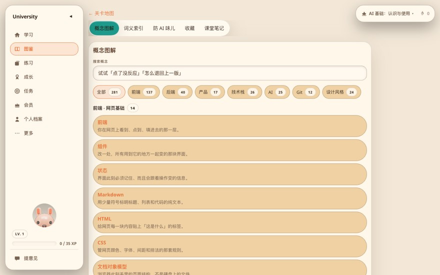
12- 15 个标签：概念图解、词义索引、防 AI 味儿、收藏、课堂笔记。
- 2281 个概念一次摊开，前端 137 个、后端 40 个，排成一张张文字格子。
HTML？CSS？……这是一本词典吧，我翻两页就关了。
它是一本全部摊开的大词典：没有「我学到了哪些」，也没有「下一张是什么」。
每个概念是一张卡。卡面的画法，参考了你找到的那个抽卡帖子：粗描边、三层上色、按稀有度换边框和镶嵌件。你可以把鼠标（或手指）放上去晃一晃，点一下翻面：
- 1学到了，卡才出现。默认只看正在学的领域，「AI 基础 · 已集到 3 / 25」；想看全部，一点就展开，281 个一个不少。
- 2卡会跟着你的记性升级：刚拿到是银框；复习几次、记得住了，换成紫框镶宝石；三周以后还记得，变成金框闪卡，戴一顶小王冠。「三周」用的是产品里现成的标准。所以收集闪卡，就是在复习。
- 3学完一关，卡片一张张翻开，像抽卡一样；最稀有的那张最后翻，背后亮起一圈光。点上面的按钮试试。
- 4名字说人话：「课堂笔记」改叫「我的笔记」；「防 AI 味儿」只在学做应用的领域出现；「互动课件」从练习页搬到这里。
打个比方
一本全国邮票目录，和一本自己慢慢集满的集邮册。前者翻两页就合上了，后者会让人想「下一张是什么」，最稀有的那一张，更是舍不得放下。
背后的道理
收集的乐趣来自两件事：差几张就集满，和那张最稀有的。让「稀有」取决于「真的记住了」，收集和复习就变成了同一件事。
你在 V6 意见里说
「我想让玩家用户在用这个的时候感觉很好看，然后更视觉化一些，然后点进去之后他们能复习，他们也有收集感。」
小字：卡片效果从哪来，有什么要注意
倾斜和反光，参考了 React Bits 的个人名片卡；边框、描边、上色和翻卡的节奏，参考了你找到的抽卡帖子和它的提示词。我们照着思路，在界面工具包 SwimmerUIKit 里自己写，上面这几张就是自己写的。
那份提示词里有几条，做正式版时照着做：描边用「边缘检测」画，粗细均匀，转角不断；最稀有的那张揭晓时，背景换成干净的渐变加慢慢转的柔光，其他东西收起来；光效都要柔和，不能有硬边；音效用网页实时合成，第一次点击才开始。
手机上跟着手机倾斜，在 iPhone 上要先请用户允许；不允许，就只在手指滑动时倾斜。「减少动态」打开时，卡片不倾斜、不闪。
卡片上的一句话解释，用的是图鉴里现有的概念简介。前面说过：课文里要标出讲到的概念，卡才会在学完时出现。
集了几张卡，小林想知道自己到底学得怎么样。
看看自己的进步：段位和徽章
小林点了「我」，想看看成长。
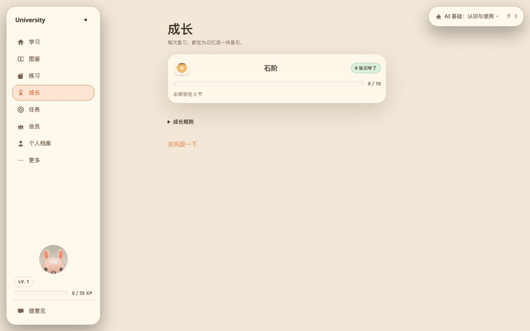
1 2
2- 1石阶：记牢了几张卡。
- 210 枚徽章，都是灰色的小方块。
数一数，小林会看到 5 套进度：等级和经验、连续天数、石阶、今日任务、10 枚徽章。第一次来时，全是 0。
这么多 0……我离学会还差得远吧。
进度本来是给人信心的，现在一上来先给人看五张空白的账单。
和头像面板上的是同一组数字
再记牢 10 张卡，升到铜阶
- 1平时只看两个数字：连续几天，今天学了几关。它们跟着头像走，每页都看得到。
- 2段位用新做的 3D 徽章来表示。名字和规则不变：按「记牢了几张卡」分五级。
- 3徽章墙换成 3D 徽章。没拿到的是灰色，写着还差多少。
段位一共五级，照参考视频的样子做，越往上越华丽：
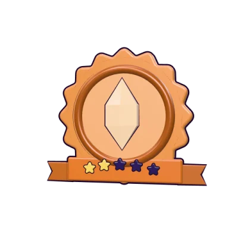
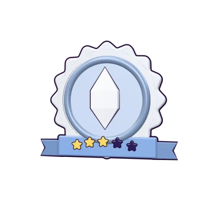
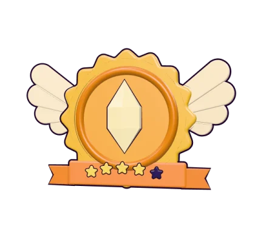
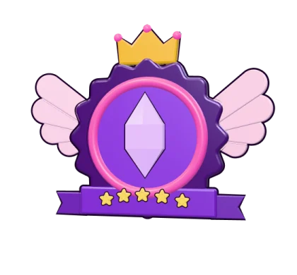
徽章：现有的 10 枚全部做成 3D；我另外设计了 7 枚新的（带「新」字的）。每一枚都要靠「做了这件事」拿到，光靠刷次数拿不到：
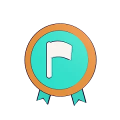
上路学完第 1 关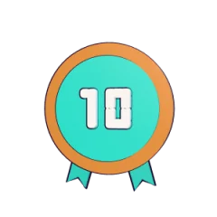
十关学完 10 关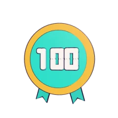
一百关学完 100 关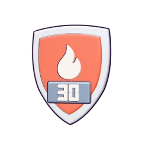
一个月连续 30 天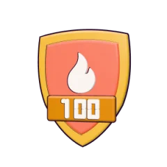
一百天连续 100 天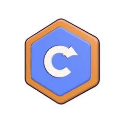
回头看复习第一张卡片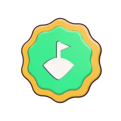
走完一门学完一门课的每一关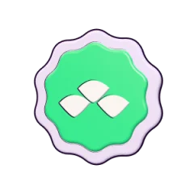
三座岛学完 3 门课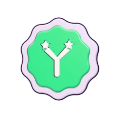
两条路两个方向都学完第一门课徽章会出现在四个地方：开箱时正好拿到，就在奖励最后弹一个大的，转一圈、展开翅膀；头像面板上挂着你的段位；「我 → 成长」里是整面墙；学完一门课的结业卡上，印着这门课的徽章。
打个比方
刚办了健身卡，前台就递给你五张表：体脂、肌肉量、心率、步数、会员排名，全是空的。你只会想「我是不是来错了」。
背后的道理
课程的名字叫「从害怕到自信」。进度是用来给人信心的：先让人看到自己已经有的（连续 2 天），再让人看到下一步（还差 10 张升铜阶）。一墙空格子，只会让人泄气。
小字：新徽章从哪里算出来
现有的 10 枚徽章，都是从学习记录里直接算出来的，不另外存。7 枚新的也一样：答题记录能算出「一次全对」，挑战记录能算出「挑战者」，跳级测验、错题本、「用自己的话讲一遍」都有现成的记录。要不要一次加这么多，见拍板 M。
一周过去，小林觉得这东西真有用，开始认真考虑付费。
考虑付钱
学了一周，小林点了头像面板最下面那行「看看会员」。
- 1会员一年 149 美元，主要卖点是「学习进度同步」。
- 2一句说批改不受限，下一句又说批改另外收钱，两句话打架。
- 3整个产品里，没有任何地方可以退订。
花一千多块，就为了手机电脑能同步？……而且，我为什么不直接用 ChatGPT？
卖的东西在用户眼里本来就该免费；没回答「为什么不直接问 ChatGPT」；说明打架；不能退订。
✓ 开放题 AI 批改不限次
✓ 「为什么错」讲给你听
✓ 手机电脑接着学
✓ 全部课程、宝箱、徽章
✓ 复习卡片、练习
✓ 每天约 4 次 AI 批改（留邮箱后）
- 1最上面一句，回答「为什么不直接问 ChatGPT」。和开屏上的那句是同一句。
- 2卖真正值钱的东西：AI 批改和讲解（你拍板的 C1）。价格照旧用美元（F2）。宝箱和徽章，免费的人一样有。
- 3试用、到期提醒、随时退订、退款说明，一样不少。
打个比方
健身房的器械随便用，私教课另外收钱。没人会为「能进门」付费，但会为「有人手把手教我」付费。
背后的道理
让人为真正有成本、也真正有价值的东西付钱。AI 每批改一次，都要真的调用一次模型。奖励和课程如果要付钱，就把最开心的部分关在了门外。
你在 V6 意见里说
「你要加的第三样，在我说的那个开屏动画里面就得提及，在开会员的那个页面也得提及。」
付钱之前，小林还想弄清楚：账号在哪、能不能退、隐私怎么保护。
账号、设置和退订
小林换了新手机，想登录看看进度还在不在，顺便看看隐私政策。
1- 1「登录 / 创建账号」是页面中间一个折起来的块。
- 2设置里写「帐户」，个人档案里写「账号」。
整个产品里，现在没有隐私政策、用户协议、退款说明，也没有帮助页。
我的进度存在哪？换手机还在吗？我填的邮箱会被拿去干什么？
账号藏得深、名字不统一；让人放心的几样东西，一样都没有。
- 1最上面一句话说清进度存在哪；登录以后这里显示邮箱。
- 2会员和退订放在一起。
- 3补上帮助、隐私政策、用户协议、退款说明。「账号」统一一种写法。设置最下面是「实验室」（第 7 站）。
打个比方
银行柜台墙上挂着营业执照和服务协议。平时没人去读，但正因为它挂在那儿，你才敢把钱存进去。
背后的道理
收钱、上应用商店、收集邮箱，都要求有隐私政策和用户协议。这是一个商业产品开门营业的底线。
奖励这一整套，是怎么连起来的
宝箱、经验、卡片、段位、徽章，分散在好几站里讲。放在一张图上，它们其实是一个圈。
| 东西 | 在哪拿到 | 拿来做什么 | 产品里现在有没有 |
|---|---|---|---|
| 经验值 | 每个宝箱 | 升等级 | 有（读完 15，第一次答对 25） |
| 复习卡 | 每个宝箱 | 按记忆曲线回来复习 | 有 |
| 知识卡（图鉴） | 每个宝箱 | 收集；记牢了变闪卡 | 概念有 281 个；课文里要标出讲到的概念 |
| 连续天数 | 当天第一个宝箱 | 头像旁的火苗 | 有 |
| 小结卡 | 蓝箱 | 这一段学会了什么 | 新做；用每段已有的目标来写 |
| 头像装扮 | 紫箱 | 换头像的配色、材质、小部件 | 头像工具包里已有这些选项，要加一张「解锁表」 |
| 课程徽章、结业卡 | 金箱 | 收藏、分享 | 新做 |
| 知识之星 | 每个宝箱 | 赶走下一关的小怪；大怪要三颗 | 新做，只是开箱后的一段动画，不另外存 |
| 卡包、碎片 | 蓝箱、紫箱、金箱、每周大怪、连续天数 | 抽装扮；重复的攒碎片换想要的 | 新做，要新存数据 |
| 段位 | 复习 | 按记牢的卡分五级 | 有（石阶到黑曜阶），换成 3D 徽章 |
| 徽章 | 做到某件事 | 徽章墙 | 有 10 枚，新设计 7 枚 |
让人停不下来：把游戏里最上瘾的几招，用在学习上
你说得对：上瘾是一件武器，看用在哪儿。手游让人天天回来的那几招，我们一招一招搬过来，只是把「奖励」换成「学到的东西」。
先看一招这一版新加、我最看好的：快忘的卡，会变成小精灵，回到你已经走过的垫石上。
复习两分钟，小精灵就被赶跑。复习本来是最容易偷懒的事；现在它变成了「岛上又来了几只小东西，去赶一下」。提醒也可以这样写：「你的岛上回来了 3 只小精灵」，比「你有 3 张卡到期」好玩得多。
全部的招数，按「游戏里怎么用、我们怎么用、为什么管用」排好：
- 1看得见的敌人这一版新加游戏里地图上的怪挡着路，打掉才能往前走。我们没开的关站着一只小怪，每只是一个「怕」。学完上一关，扔知识之星把它赶走。为什么「学下一关」很抽象，「赶走那只蛙」很具体。目标越具体，人越愿意动手。
- 2不知道下一次有多好已有游戏里开箱、掉落，每次都可能出好东西。我们四种宝箱，全对还会升级，庆祝的大小跟着箱子变。为什么这是所有机制里最强的一种：奖励时大时小，人反而停不下来。
- 3抽卡拍板 Q游戏里十连抽，最后一张金光闪闪；十次保底；重复的变碎片。我们蓝箱、紫箱、金箱里有卡包，每天第一次打满连续天数也送一包。卡包里只有装扮：卡面、卡背、头像配饰、岛上的小摆设。重复的变碎片，攒够了换你想要的那件。为什么翻卡那一下的心跳，是手游最让人上头的时刻。我们只让装扮靠运气，学到的知识从来不靠运气。
- 4差几张就集齐这一版新加游戏里图鉴、套装，集齐有奖。我们图鉴按一段路分套，比如「AI 基础 · 第一段」6 张。集齐给一件限定装扮；整套变成闪卡，再给一件。为什么没做完的事，人会一直惦记着。
- 5快忘的卡变成小精灵拍板 O游戏里被打下来的领地，会被敌人偷偷占回去。我们上面那张图。复习就是把自己的岛守住。为什么人对「失去已经有的」比「得到新的」更在意。这股劲用在复习上，正好。
- 6连续天数，允许喘口气已有休息日券新加游戏里连胜火苗，断了就清零。我们头像上的火苗照旧。每周送一张「休息日券」，那天不学也不断；连续 7 天再送一张。为什么怕断，所以天天来；可以喘口气，所以不会因为断了一次就再也不来。
- 7每天第一关双倍这一版新加游戏里每日首胜奖励。我们每天学的第一关，经验翻倍，箱子上写着「今日首箱 ×2」。为什么给「今天至少来一次」一个具体的理由。
- 8每周一只大怪拍板 R游戏里每周刷新的首领战。我们每周一，岛边上来一只大怪，要用这一周学过的内容答五道题才能赶走，奖励紫箱。为什么一周有一个固定的「约会」，还顺便把这周学的复习一遍。
- 9一开始就给一点进度这一版新加游戏里集点卡送你前两个印章。我们第一次打开，图鉴就已经有两张卡（「提示词」「AI 是什么」），第一段路显示 2 / 6，不是 0 / 6。为什么已经开了头的事，人更愿意做完。
- 10打扮自己的小人和岛这一版新加游戏里皮肤、家园。我们箱子和卡包给的装扮，戴在小兔子身上、摆在岛上。头像面板和结业卡上都看得到。为什么自己亲手打扮过的东西，舍不得离开。
- 11段位晋升的仪式已有游戏里升段时徽章转一圈、展开翅膀。我们记牢的卡够数，段位徽章就照参考视频那样升级一次，在头像旁边换成新的。为什么看得见的身份，比一个数字更让人想往上走。
- 12限时活动拍板 R游戏里节日活动、限定卡池，过期就没。我们比如「AI 安全周」：一周里岛上出现限定小怪，赶走它们拿限定卡面。为什么「这周不来就没了」。这一招很猛，所以要等有了一批用户、有了足够的内容再用。
卡包长这样：
×1
- 每包 3 件，全是装扮：卡面、卡背、头像配饰、岛上的小摆设。
- 十包之内，必出一件紫色以上；五十包之内，必出一件金色。
- 重复的变碎片，攒够了换你想要的那件。
- 卡包只能靠学习拿到：蓝箱、紫箱、金箱、每周大怪、打满连续天数。不能买。
还是不做的三件事
花钱抽卡、卖钥匙。很多地方管这件事：比利时直接禁止花钱开随机箱，中国、韩国要求公布概率。而且一旦要花钱，好玩就变成了算计。
答错扣命、不让继续学。学习产品里，错了正是要学的时候。
用内疚和恐吓写提醒。「你要断了！」会让人愧疚地回来一次，然后删掉 App。「岛上回来了 3 只小精灵」让人好奇地回来。
小字：哪些要新存数据
现在的徽章、任务都是从学习记录里算出来的，不另外存。抽卡、碎片、装扮是随机的，算不出来，必须存下来：要在 SwimmerBackend 里给 University 加一张「我的装扮和碎片」表，跟着账号走，手机电脑一样。概率和保底的计数也存在服务器上，不能放在浏览器里，不然会被改。
一路上还有几个小毛病
它们单独看都不大，但新手每遇到一个，就会犹豫一下。
一、同一个东西，统一叫「第 N 关」
你拍板了 G2。要改的地方：目录和课程介绍里的「36 节」改「36 关」；学完页的「1 / 36 关」保留；「关卡地图」保留；地图说明里的「小节关卡」改「关」；右边说明栏的「已完成 0 / 36 节」改「关」。「账号」和「帐户」也统一成「账号」。
二、「电脑话」提示，删掉
「快捷操作：空格或更多」在手机上也这么写，手机没有空格键。删掉，地图怎么用交给涟回答。
三、还没有课的星球：「即将开放，开放时告诉我」
你拍板了 E1，也说星球先留着，课多了再丰富。所以现在只改一处：「暂未发布」换成「即将开放 · 开放时告诉我」，顺便收集邮箱。
四、写给作者看的话，彻底清掉
比如目录里每一关后面标着「现象」「对比」「决策」，这是写课时用的内部分类；课程上方写着「这几门课没有先后，所以平铺列出」，这是在解释排版。
「彻底」的意思是：不只删掉这几句，还要加一道检查。每次发布前，把用户能看到的所有文字扫一遍，碰到写课用的分类词、解释排版的话、代码里的名字，就不让发布。这样以后新写的课，也不会再漏出来。
五、新发现：手机上，小圆标盖住了垫石
手机上，每一关头顶的黑色小圆标变得很大，几乎盖住了整块垫石。放宝箱以后会更挤。建议手机上把小圆标缩小一半，只在选中的那一关显示完整的。
站高一点看
走完 12 站，我又从新手的直觉回头想了一遍：还缺什么，有什么是多余的。
V6 说可以加的三样，这一版都有了着落
- +看得见的终点：岛的最后一关是金箱，里面是这门课的徽章和结业卡。站在岛上，远远就看得见。
- +告诉小林这门课有多长：涟的「帮你选」里写着「大约 5 周学完」；岛的说明栏里也写。这个时间要先实测，测不出来就只写「36 关」。
- +回答「我为什么不直接问 ChatGPT」：开屏和会员页，同一句话。
减掉的
- −菜单：12 个入口减到 4 个。每个旧入口都有去处（第 7 站）。
- −进度：平时看的 5 套减到 2 个数字，跟着头像走（第 10 站）。
- −学完页：一长页十样东西，变成一次开箱和一句话。
- −欢迎：白色弹窗拿掉，只剩涟一个声音。
- −复习页：三块减到两块。
这一轮，我推翻了自己的几处
- −V6 里「每页最上面加一条」放连续天数和会员。现在它们跟着头像走，那一条不要了，页面上少一样东西。
- −V6 里学完要走三小步。现在是一次开箱加一句话；只有该问的人，才多看一张卡。
- −V6 里我说欢迎「仍然只有一页」，把一条 AI 起草的旧规则当成了你的原话。你说分页没问题，我就不再拿它当理由。
- −我一开始想把参考视频里的四种颜色原样搬过来。放到岛上一看，绿箱子和「能去」的绿圈撞了，就改成了木箱。
改完以后，小林的一天
把前面的改动放在一起，小林第三天的早上会是这样：
（昨晚收到的提醒邮件）
通勤路上看到提醒。
涟：继续第 3 关
音乐响起，一按就进课。
星星一扔，没空鸡跑了
小人跳起来，火苗多了一格。
复习 3 张卡赶走
地铁到站前，顺手守住自己的岛。
你也可以自己点一遍。下面是一部示意的手机，按橙色按钮往下走，到了岛上以后，底部 4 个按钮都能点。它不连真实数据。
在这里，学会怎么问、怎么判断
第 1 关：想知道照片里的一处，怎么问 AI？
复习
图鉴
- 开屏：一句卖点，点一下开始
- 涟打招呼：一条路直达；有第二条再选择
- 拿不定主意：帮你选
- 涟飞到第一块垫石旁
- 上课：不动
- 学完：回到岛上，箱子在发光
- 开箱：奖励一个个弹出
- 知识之星：扔向下一关的小怪
- 小怪跑了，下一关开了
- 收尾：一句话，一张卡
- 第二天：涟说「继续」，底部 4 个门
到岛上以后，点「复习」，可以看到免费批改用完时，会员是怎么出现的。
你已经拍板的
V6 的 7 件事，你选的是 A1 B2 C1 D1 E1 F2 G2。它们在这一版里是这样落地的：
- A1「继续」按钮：按你的意见，放进了涟里（第 6 站）。
- B2菜单 4 个门，「成长」并进「我」（第 7 站）。
- C1会员卖 AI 批改和讲解（第 11 站）。
- D1学完第 1 关请留邮箱，可以跳过，第 3 天再问一次（第 5 站）。
- E1没课的星球写「即将开放，开放时告诉我」（小毛病三）。
- F2价格都用美元（第 11 站）。
- G2统一叫「第 N 关」（全篇，小毛病一）。
V7 第一版的 6 件，你选的是 H1 I1 J2 K1 L1 M1：
- H1普通箱用木头色（第 3 站）。
- I1网页每次点一下进；手机和电脑 App 加载完自动进（第 1 站）。
- J2每次都完整演。按你补充的意思：四种箱子时长不同，木箱约 2.5 秒到金箱约 6 秒；点一下可以快进（第 4 站）。
- K1「保存，有卡片时提醒我」一个按钮说清（第 5 站）。
- L1实验室只在作者版里显示（第 7 站）。
- M1新设计的 7 枚徽章一起加（第 10 站）。
需要你拍板的 5 件事（已按推荐定下）
都是这一轮新冒出来的问题：小怪、复习精灵、扔什么、抽卡、活动。每件事我写了选这个会怎样，以及我推荐哪个。点选以后，最下面会生成一行字，复制发给我就行。
N小怪站多少只？
O快忘的卡，变成回来的小精灵？
P赶小怪，扔的是什么？
Q卡包抽卡，怎么做？
不管选哪个，都不能花钱买，概率都公布。
R每周大怪、限时活动，什么时候做？
还没选以前定好的，这次不变
游戏化的那几招，已经放进了「让人停不下来」那一部分；还是不做的三件事也写在那里。下面这些以前定的，这次都不变。
先做什么，后做什么
正式上线仍然要等第 1–3 课的样课做完。下面每一步写了「做到什么样才算好」，拍完板就可以一步一步开工。
- 第 1 步收钱之前
退订入口、隐私政策、用户协议、退款说明；会员页删掉打架的那句，加上「为什么不直接问」。
做到这样算好：从「我」两步之内找到退订；会员页没有互相矛盾的话。
- 第 2 步开场
开屏和转场屏（做进界面工具包，三端共用一份）；进度条接上真实的加载；涟接管第一次见面。
做到这样算好：进门时岛是完整的；2 秒内加载完不弹转场；新人从打开到进第 1 关，最多点 3 下。
- 第 3 步宝箱和小怪
岛上的两种新元素：宝箱（四种、三种状态）和小怪（代替原来的锁石，最近三只会动）；都在锁定表里各加一行。
做到这样算好：36 关的岛上每关都有箱子和小怪，不挡路、不叠在别的东西上；手机上帧率和加之前比，不掉超过一成。
- 第 4 步开箱和赶怪
学完回到岛上：蓄力、按箱子分级的喷发、声音、奖励文字；知识之星和小怪逃跑；「减少动态」的做法；全对升级。
做到这样算好：木箱约 2.5 秒、金箱约 6 秒，点一下快进；奖励上的数字和学习记录一致；小怪跑掉后，下一关立刻能进。
- 第 5 步回来的理由
收尾卡的三种样子；涟的「继续」；头像面板的新样子；提醒邮件。
做到这样算好：回来的人第一屏就能按「开始」；会员介绍一周最多一次；选了「以后再说」，当天不再问。
- 第 6 步徽章、卡册、抽卡
3D 徽章和段位；徽章墙；新卡面和翻卡；复习小精灵；卡包、碎片和装扮（要新存数据）；课文里标出讲到的概念（交给写课的流程）。
做到这样算好：学完第 1 关，确实点亮至少一张卡；卡框跟着记性升级；卡包概率写在页面上，保底计数存在服务器。
- 第 7 步收拾
菜单 4 个门和「实验室」；统一「第 N 关」；删电脑话；加上「作者话」的发布前检查；手机上缩小小圆标。
做到这样算好：全产品里「一关」只有一个叫法；发布检查能拦住故意放进去的一句作者话。
开屏、知识卡、头像面板这些新控件，先加进界面工具包 SwimmerUIKit，再拿来用。University 里不另做一套。
你可能会问
读到这里，你心里大概会冒出这几个问题。
判断标准只有一个：它奖励的是不是「真的学到了」。箱子里只有学到的东西，闪卡要三周后还记得，徽章要做到某件事。靠刷拿不到，花钱买不到。
同一种箱子一次画完，一座岛只多几次绘制。做的时候要在手机上测，掉帧超过一成就简化模型。开箱的粒子最多 80 个，慢的手机减半。
宝箱、段位和 17 枚徽章，是我照你给的参考视频用代码做的；小怪来自 world-of-claudecraft 素材库，本来就带骨骼和动作。你在第 4 站可以亲手开箱。放进真正的岛之前，要换进地图的颜色和光照管线。
挑的都是圆滚滚、颜色亮的，每一只的名字就是新手心里的一个「怕」。被星星打中，它们是抱头逃跑，不是被打倒。整个过程在讲一件事：你学一关，一个「怕」就跑了。
不花钱就不是。卡包只能靠学习拿到，里面只有装扮，概率公布，还有保底。赌博的坑在于花钱去赌；我们把「花钱」这一步整个拿掉了。
我还没估工时。你拍完板，我按「先做什么后做什么」拆成一个个任务，每个任务一次提交。
两件事：看一眼「先对一遍」里第二轮的 20–25 条，有听错的告诉我；在「需要你拍板的 5 件事」里点 5 次，按「复制给我」发回来。
功能一个都没丢
菜单从 12 个入口减到 4 个，你可能担心有些功能不见了。下面这张表逐项列出每个功能现在在哪、改完以后在哪。
展开 / 收起表格（范围：用户能看到的全部页面和入口，加上作者用的调试工具）
| 功能 | 现在在哪 | 改完在哪 |
|---|---|---|
| 加载画面 | 一张小卡片 | 开屏动画；转场屏只在卡住 2 秒以上出现（新） |
| 欢迎 | 白色弹窗 | 涟的面板，分页（改） |
| 选学习方向 | 欢迎弹窗里折起来 | 涟的第一页，两张路线卡 |
| 帮你选 | 没有 | 涟的第二页，两道小题（新） |
| 跳级测验 | 课程里 | 课程里 + 涟的第一页一个链接 |
| 课程岛（3D） | 学习 | 学习，垫石旁加宝箱（新） |
| 没开的关 | 垫石上压着一块石头 | 垫石上站着一只小怪（新）；学完上一关，扔知识之星赶走 |
| 星球 | 地图上方的路径 | 同上，没课的写「即将开放」 |
| 今天该学哪一关 | 更多 → 复习 | 涟说「继续第 N 关」 |
| 目录 / 搜课 | 更多 → 目录 | 学习 →「找课」 |
| 课文 | — | 不动 |
| 学完页 | 一长页 | 回到岛上开宝箱 + 涟的收尾卡 |
| 岛长大（开出新的一块地） | 学完页上一行字 | 开箱后镜头拉回高处时，亲眼看到 |
| 用自己的话讲一遍 | 学完页 | 收尾卡最下面一行小字（可跳过） |
| 复习提醒 | 设置（学完页的提醒卡没出现过） | 收尾卡的「保存，有卡片时提醒我」+ 设置 |
| 到期卡片复习 | 更多 → 复习 | 复习 |
| 错题本 | 单独一页，菜单里找不到 | 复习 →「再练几道」先出错题；「看全部错题」 |
| 练 3 题 / 自由练习 | 练习 | 复习 →「再练几道」 |
| 互动课件 | 练习页一个按钮 | 图鉴 → 互动课件 |
| 今日任务 | 任务 | 头像面板「今天 0/1 关」+ 我 → 成长 |
| 连续天数 | 头像下面一个小火苗 | 头像右下角的火苗（放大）+ 一周七个点 |
| 等级、经验值 | 头像下面 | 头像面板 + 我 → 成长 |
| 石阶（段位） | 成长 | 我 → 成长，换成 3D 段位徽章；头像旁挂一枚小的 |
| 徽章墙 | 个人档案 | 我 → 成长，换成 3D 徽章 |
| 概念、词语 | 图鉴 | 图鉴，知识卡（默认只看正在学的领域） |
| 防 AI 味儿 | 图鉴 | 图鉴（学做应用的领域里） |
| 收藏 | 更多 → 收藏 | 图鉴 → 收藏 |
| 课堂笔记 | 图鉴 | 图鉴 →「我的笔记」 |
| 会员 / 购买 | 菜单里的「会员」 | 头像面板最下面 +「我」+ 批改用完时 + 收尾卡（一周最多一次） |
| 管理订阅、退订 | 没有 | 我 → 会员（新） |
| 登录、注册、留邮箱 | 个人档案（折起来） | 「我」最上面 + 收尾卡 |
| 设置 | 更多 → 设置 | 我 → 设置（按用途分组） |
| 一起学（共享动态） | 设置 | 设置 → 隐私 |
| 提意见 | 头像面板最下面 / 手机上的浮动按钮 | 头像面板最下面 / 手机上放进「我」 |
| 问涟 | 地图底部 | 地图底部，还负责欢迎、继续和收尾 |
| 语言、主题、画面风格（灰阶 / 淡彩）、声音、阅读辅助 | 设置 | 设置（分组） |
| 隐私政策、用户协议、退款说明 | 没有 | 我 → 关于（新） |
| 帮助、常见问题 | 没有 | 我 → 帮助（新） |
| 每天学几关 | 没有 | 设置 → 学习（新） |
| 3D 学习游戏（岛上的挑战） | 课程岛上的旗子 | 不变，旗子旁加紫箱 |
| 我的小任务 | 课程岛路边的告示牌 | 不变 |
| 头像工坊 | 个人档案里的一个链接 | 我 → 设置 → 实验室；换装扮的入口留在头像面板上 |
| 互动课件实验室（三套） | 练习页一个按钮 / 直接地址 | 我 → 设置 → 实验室 |
| 岛屿外观调试 | 开发时用地址参数打开 | 我 → 设置 → 实验室（地址参数照样能用） |
| 作者工作台（只在作者模式） | 更多 | 我 → 设置 → 实验室 |
附：这份报告是怎么做出来的
展开看方法、证据和没验证的
截图：本机交付版，全新浏览器、中文界面，电脑 1440×900、手机 390×844。第 0、3、6 站和小毛病五是 9 月 27 日新截的（代码版本 f4718f7b，涟已接入）；其余沿用 V6 的截图（9 月 25 日）。加载卡片和学完页没截到，照代码画。
第二轮：world-of-claudecraft 素材库从 0.38.4 同步到 0.43.3（多了 10 只怪）；小怪的动作是模型自带的（站立、摇头、抱头蹲下、逃跑）。「扔星星」四张图、岛的两张大图，是用真实的小兔子头像、宝箱和怪物模型在 3D 里摆出来的示意，岛上的树和花用的是 Kenney 素材里的方块树，只是示意：产品地图上的树是程序生成的圆冠树，施工时用岛上原有的。
3D：宝箱、段位、徽章是我照参考视频用代码做的模型，渲染用的是和产品同一个版本的 3D 库；开箱的四张图用的是产品里真正的访客小兔子头像。岛上那张宝箱图，是把渲染好的箱子合成到真实截图上的示意，不是游戏里的实时画面。
核对过的数字：第一关读完 15 点、第一次答对 25 点经验，升到 2 级要 35 点；段位按「三周后还记得的卡」分五级（0、10、50、150、400 张）；第一关有 2 张复习卡；「认识 AI」这门课的课文里没有标出概念。
技术上要动的地方：界面工具包加开屏、知识卡、头像面板；涟的工具包不用改，用它已有的「面板里放产品卡片」和「带人去看真实的地方」；头像工具包加一张「装扮解锁表」；程序化地图加宝箱这一种元素，并在锁定表里登记；开箱和徽章的数字全从学习记录里算。
没有验证的：没有找真人试用；「大约 3 分钟」「大约 5 周」没有实测；宝箱放进真实地图后的帧率还没测。所有「推荐」是依据证据的判断，不是数据证明。
这一版和 V6 的区别：按你的意见加了开屏、涟接管、岛上的宝箱、开箱、按人不同的收尾卡、头像面板、知识卡、3D 段位和徽章；拿掉了「守住以前的决定」的紫框；紫框改成只放你的原话。